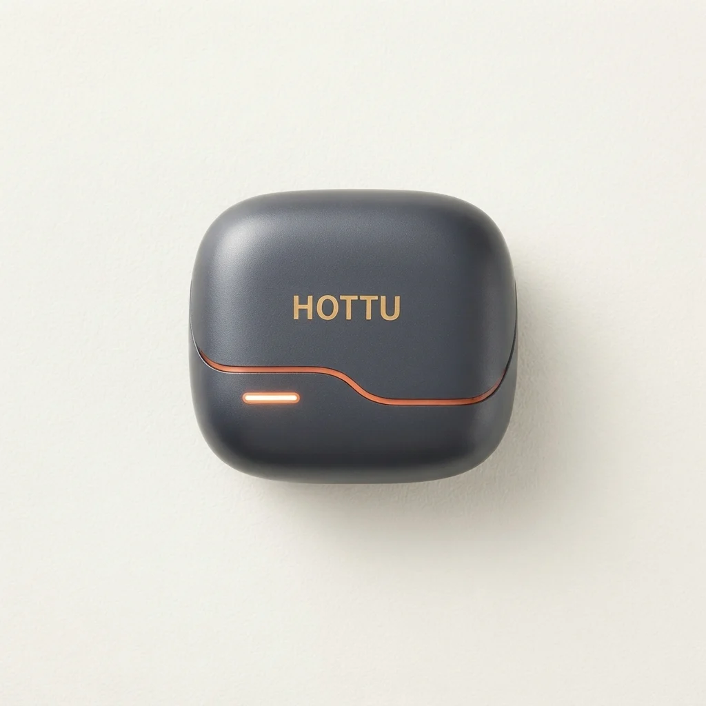

Best Earphones & Bluetooth Devices in Islamabad: Practical Shopping Guide

Looking for the best earphones & bluetooth devices in Islamabad? This practical shopping guide helps you navigate the options available online in Pakistan. The selection includes true wireless earbuds, neckband models, and wireless headphones, each with unique features like noise cancellation, battery life, and sound quality. While the category broadly covers audio accessories, some items, like the Mf Model YG17 neckband, focus more on daily use than advanced audio performance. This guide highlights key factors to consider, such as price, durability, and delivery options, to help you make an informed choice. Whether you're shopping for personal use or as a gift, understanding the differences between these products ensures you get the right fit for your needs.
Quick buying check: Match the actual item to your task, check its measurements or compatibility, and compare the full delivered price. Read the listing and policies before you order. The examples below are catalog evidence, not hands-on test results.
Key benefits of choosing Earphones & Bluetooth Devices carefully
- Better fit for your task: select the specification or design your situation needs.
- Clearer budget: compare the item, delivery and any required extras together.
- Fewer avoidable returns: resolve missing measurements and compatibility questions before ordering.
- More useful ownership: check how the item will be stored, cleaned and used.
Selection criteria and matching the actual task for Earphones & Bluetooth Devices
When selecting earphones or Bluetooth devices, focus on how well they meet your specific needs. Consider usage scenarios like commuting, workouts, or office use. Look for features such as noise cancellation, battery life, and connectivity stability. Ensure the device supports the necessary Bluetooth versions and has reliable app integration if required. Check for compatibility with your smartphone or other devices to avoid performance issues.
Evaluate the device’s performance in real-world conditions. Test for sound quality, call clarity, and range. Look for user reviews that highlight durability and reliability. Be cautious of exaggerated claims in product listings and verify through multiple sources. Consider the environment where you’ll use the device, such as noisy public spaces or quiet home settings. Ensure the device offers the right balance of features without unnecessary complexity.
Review the total cost beyond the listed price. Factor in delivery charges, taxes, and potential return policies. Check if the seller offers cash on delivery and understand the return process before purchasing. Ensure the device comes with proper warranty and customer support. Verify if the seller is reputable and has positive feedback from other buyers. Confirm that the product meets your needs and that the purchase aligns with your budget.
Fit, dimensions, compatibility or edition checks for Earphones & Bluetooth Devices
Check the fit of earphones by testing different ear tip sizes available in local stores or online listings. In Islamabad, many retailers offer trial periods or return policies to ensure comfort. Ensure the dimensions of the device match your needs, such as compact designs for easy carrying or larger models for better sound quality. Verify compatibility with your devices, like smartphones or tablets, to avoid issues with connectivity or functionality.
Confirm that the product edition supports the features you need, such as noise cancellation or water resistance. Check if the device works with popular apps or services used in Pakistan, like local streaming platforms or messaging apps. Ensure the brand’s warranty and service centers are accessible in Islamabad or nearby areas for easy support and repairs.
Review the product’s specifications for details on battery life, range, and charging methods. Ensure the device is compatible with local Bluetooth standards and network frequencies. Check for any regional restrictions or limitations that might affect performance in Pakistan. Always refer to the manufacturer’s guidelines for proper use and maintenance. Look for certifications that indicate safety and quality, but prioritize practical testing and user feedback for real-world performance.
Quality evidence and limitations of listing claims for Earphones & Bluetooth Devices
Quality evidence for listing claims in earphones and Bluetooth devices involves verifying specifications against real-world performance. Look for user reviews that highlight sound clarity, battery life, and connectivity stability. Check for certifications like IP ratings or audio standards to confirm durability and sound quality. Reliable sources include independent testing platforms or trusted local tech forums in Islamabad. Avoid over-reliance on manufacturer claims without third-party validation.
Limitations of listing claims often stem from unverified data or marketing exaggerations. Some listings may lack detailed performance metrics or fail to mention compatibility issues with specific devices. In Islamabad, local availability and after-sales support can affect the actual user experience. Always cross-reference claims with multiple sources and consider regional factors like network coverage or climate effects on device performance. Be wary of vague descriptions or missing technical details.
Be cautious of exaggerated features or missing details in product listings. Verify if the listed specifications match the actual product upon delivery. Check return policies and customer service reputation before purchasing. In Pakistan, ensure the seller offers reliable delivery and support. Use the shopping checklist to systematically evaluate each product’s strengths and weaknesses. Prioritize transparency and practicality over flashy claims. Always read the fine print regarding warranty terms, service centers, and repair options.
Budget tradeoffs and the full delivered cost for Earphones & Bluetooth Devices
Budget tradeoffs require balancing initial cost with long-term value. Lower-priced options may lack durability or advanced features, while higher-end models offer better performance but cost more upfront. Consider how often you'll use the device and what features are essential. A cheaper model might suffice for casual use, but a more expensive one could be better for frequent or demanding tasks. Always compare prices across platforms and look for deals that match your needs without overspending.
Full delivered cost includes shipping, taxes, and any additional fees that may apply. These can significantly affect the total price, especially for online purchases. Some sellers offer free shipping, while others charge extra, so factor this into your decision. Also, consider return policies and potential restocking fees. A lower product price might not be the best deal if delivery costs are high or returns are difficult. Always calculate the total cost before finalizing a purchase.
Prioritize features that align with your usage patterns and lifestyle. For example, battery life, sound quality, and connectivity options matter more for some users than others. Check for customer reviews and real-world performance to avoid overpaying for unnecessary features. Be cautious of exaggerated claims in product listings and verify information through reliable sources. A well-informed choice ensures you get the best value for your money without compromising on essential functions.
Setup, care, storage and useful ownership for Earphones & Bluetooth Devices
Setup for earphones and Bluetooth devices in Islamabad begins with reading the user manual carefully. Ensure all components are present and test the device with a compatible phone or tablet. Pairing should be done in a stable environment to avoid interference. Avoid using unverified apps for pairing to prevent security risks. Check for software updates to ensure optimal performance. Keep the device away from water and extreme temperatures during initial use.
Care involves keeping devices dry and away from extreme temperatures. Use a soft cloth to clean surfaces regularly. Avoid exposing them to moisture or dust. Store in a cool, dry place when not in use. Handle with care to prevent physical damage. Always follow the manufacturer’s guidelines for maintenance. Avoid using harsh chemicals or abrasive materials for cleaning. Keep the charging ports free from debris to maintain connectivity.
Storage should be in a secure, organized location. Use a dedicated case or pouch to protect from scratches and impacts. Keep away from direct sunlight and heat sources. Regularly check for any signs of wear or damage. Proper storage extends the lifespan and maintains performance. Maintain a routine for device upkeep. Avoid storing devices in humid or dusty areas. Keep them in a place where they are easily accessible but not exposed to unnecessary risks.
Common mistakes, arrival inspection and returns for Earphones & Bluetooth Devices
Common mistakes when buying earphones and Bluetooth devices in Islamabad include overlooking compatibility with existing devices and ignoring the need for proper fit. Many buyers focus only on price or brand, neglecting to check if the product works with their phone or other gadgets. It’s essential to verify if the device supports the necessary Bluetooth version and features like noise cancellation or water resistance.
Arrival inspection is crucial to ensure the product is in good condition. Open the package carefully and check for any signs of damage or tampering. Verify that all components, such as charging cables, cases, or ear tips, are included and in working order. If anything is missing or damaged, document it immediately and contact the seller before accepting the delivery. This helps avoid disputes and ensures a smooth return process if needed.
Returns can be complicated, so understanding the seller’s policy is key. Some online retailers in Pakistan offer returns within a specific timeframe, while others may not. Keep the original packaging and all receipts, as they are often required for returns. If the product doesn’t meet expectations, contact customer support promptly and follow their procedures. Always check return conditions before making a purchase to avoid unnecessary hassle.
Future changes and responsible shopping decisions for Earphones & Bluetooth Devices
Future changes in the earphones and Bluetooth devices market will likely focus on improved connectivity, longer battery life, and better sound quality. As technology evolves, consumers in Islamabad should stay informed about emerging trends and innovations. Keeping an eye on product updates and user reviews can help make more informed decisions. Being aware of these changes allows for smarter purchasing choices that align with long-term needs and preferences.
Responsible shopping decisions involve considering both personal needs and environmental impact. Choosing devices from brands that prioritize sustainability and ethical manufacturing can make a difference. Supporting local businesses and verifying product authenticity reduces the risk of counterfeit items. Additionally, understanding return policies and warranty terms ensures a more secure and responsible buying experience. Opting for products with longer lifespans and repairability reduces electronic waste.
Shopping for earphones and Bluetooth devices in Islamabad requires careful evaluation of features, price, and service. Comparing options across platforms helps identify the best value. Checking delivery times and return policies is essential for a smooth purchase. Making thoughtful choices based on real needs rather than trends leads to more satisfying and responsible ownership. Considering factors like noise cancellation, water resistance, and compatibility with existing devices ensures a better fit.
A useful buying decision connects your actual task to a clearly described item. A category name, attractive photo or low headline price cannot replace checking what will arrive and whether it fits.
Illustrative Pakistan use cases for Earphones & Bluetooth Devices
Illustrative: compare a fixed PKR budget
A student with a fixed budget in Islamabad needs to compare full delivered costs when buying earphones. They check the listed price plus delivery fee to ensure the total stays within their limit. For example, a pair priced at 1059 PKR with a 250 PKR delivery fee totals 1309 PKR, which might be too high. They look for items under 5000 PKR to qualify for free shipping and avoid extra charges.
Illustrative: check fit for shared home use
A family in Islamabad wants earphones that fit multiple users. They check if the earbuds have interchangeable silicone tips or adjustable designs. For example, the Pro 2 White Wireless Earbuds offer soft tips for a secure fit. They also consider if the charging case is compact enough for shared use. This helps them choose a product that works for everyone in the household without frequent replacements.
Illustrative: plan delivery and arrival inspection
A person in a smaller town like Faisalabad orders earphones online and inspects them upon arrival. They know delivery takes 3-6 working days and plan to check the product’s condition before accepting it. They look for clear descriptions and images to ensure the item matches what was ordered. If there is a problem, they can return it within 7 days, as per the store’s policy. This helps them avoid issues with damaged or incorrect items.
Comparison and evidence from actual catalog listings
The following listing snapshot was recorded at 2026-11-01 05:30:18 PKT. These are seller-provided descriptions, not independent performance tests. A category label does not confirm that an item suits every task discussed in this guide. Check the linked item for its current price, availability, measurements and included accessories.
| Listed item | Snapshot price | Listing evidence and limits |
|---|---|---|
| HOTTU TS02 Boom X True Wireless Earbuds – Quad Mic ENC, 40H Playtime & Deep Bass | Rs 5,083 | Listing description: HOTTU TS02 Boom X True Wireless Earbuds Deliver Exceptional Audio Performance And True Wireless Freedom For Your Daily Listening Needs. Designed To Produce Immersive Sound Quality With Crisp Highs And Deep Bass These Earbuds Ensure Your Favorite Music And Calls Sound Outstanding Everywhere You Go. The Ergonomic Design Provides A Secure And Comfortable Fit For Confirm any unspecified detail with the store. |
| Pro 2 White Wireless Earbuds – Active Noise Cancelling In-Ear Headphones | Rs 1,059 | Listing description: Immerse yourself in crystal-clear sound with the Pro 2 White Wireless Earbuds. Designed with advanced audio drivers, these earbuds produce rich bass and clear high frequencies whether you are listening to your favorite playlist, joining a virtual meeting, or watching a movie on your phone.Equipped with built-in Active Noise Cancellation, they help block out distracting Confirm any unspecified detail with the store. |
| Mf Model YG17 Wireless Neckband Earphones With LED Display - Audio Device Designed For Sound Playback And Daily Listening Routine | Rs 1,933 | Listing description: This Mf Model YG17 Wireless Neckband Earphones With LED Display Provides A Reliable Solution For Audio Devices And Routine Sound Playback Needs. Formulated To Deliver Listening Benefits While Supporting Mf Model YG17 Wireless Neckband Earphones With LED Display Utility, It Fits Seamlessly Into Your Regular Sound Playback Or Daily Regimen. Designed For Easy Operation And Confirm any unspecified detail with the store. |
Delivery and returns: Sasta Milaga currently lists Rs 250 delivery, free above Rs 5,000. Usual estimates are 2-4 working days in major cities and 3-6 elsewhere. Returns can be requested within 7 days; damaged or wrong items return free, while other returns cost Rs 250. Check delivery terms and return terms for current conditions.
Frequently asked questions about Earphones & Bluetooth Devices in Pakistan
How do I choose Earphones & Bluetooth Devices for my needs?
To choose earphones and Bluetooth devices, focus on your usage. Are you looking for noise cancellation, long battery life, or comfort during workouts? Check features like Bluetooth version, battery duration, and water resistance. Prioritize brands with good reliability and user-friendly controls.
What should I check in the listing before ordering?
Before ordering, review the product description for key details. Verify if the item includes a charging case, warranty, or specific audio features. Check the seller’s return policy and delivery timelines. Ensure the product matches your needs and the listed specifications.
How do I compare the full cost in Pakistan?
Compare total costs by adding delivery fees to the listed price. Consider if free delivery applies based on the order value. Factor in return costs and potential charges for damaged items. This helps understand the full expense before purchasing.
How much is Sasta Milaga delivery and how long does it take?
Sasta Milaga currently lists Rs 250 delivery, with free delivery on orders above Rs 5,000. Usual estimates are 2-4 working days in major cities and 3-6 working days elsewhere. Read the linked delivery page for current conditions and allow for your specific address.
Can I return a damaged, wrong or unsuitable item?
The published return window is 7 days after delivery. Damaged or wrong items return free, while other returns carry a Rs 250 fee. Read the linked return policy, keep the packaging and report the issue promptly.
Are the product examples independently tested recommendations?
No. The examples are a dated snapshot of seller-provided catalog listings. We have not independently tested these items or verified customer outcomes. Prices and availability can change. Open each product page, compare the stated specifications with your needs and ask the store about missing details.
Conclusion
The best earphones & bluetooth devices in Islamabad offer a range of options tailored to different needs, from true wireless earbuds with noise cancellation to neckband models with LED displays. However, the listings reflect available products without verified performance data or user reviews, so buyers should rely on the provided features and specifications. Practical next steps include comparing key attributes like battery life, connectivity, and comfort, while keeping in mind the delivery fees and return policies. For those prioritizing convenience, cash on delivery remains a reliable option. Always check the listed price and delivery timelines to ensure a smooth purchase experience.
Choose with a clear checklist. Browse Earphones & Bluetooth Devices and compare current listing details. Read how to order before placing a cash-on-delivery order. Take time to confirm the item fits your needs.
Tags: best earphones & bluetooth devices in Islamabad, earphones & bluetooth devices online Pakistan, buy earphones & bluetooth devices online, earphones & bluetooth devices price in Pakistan, earphones & bluetooth devices comparison, earphones & bluetooth devices shopping checklist, earphones & bluetooth devices cash on delivery, how to choose earphones & bluetooth devices for everyday use, what to check before buying earphones & bluetooth devices online, compare earphones & bluetooth devices with delivery costs in Pakistan, earphones & bluetooth devices buying guide for Pakistani families, questions to ask before ordering earphones & bluetooth devices with COD
More guides
Air fresheners size fit compatibility Pakistan: Size, Fit and Compatibility Checklist
Compare Air Fresheners in Pakistan: listing details, fit and delivered costs. Read product, delivery and return information before ordering.
Umrah travel checklist: documents, packing and planning
A practical Umrah checklist: passport and visa documents, what to pack for Makkah and Madinah, health preparation and booking tips.
Air conditioners (split) size fit compatibility Pakistan: Size, Fit and Compatibility Checklist
Compare Air Conditioners (Split) in Pakistan: listing details, fit and delivered costs. Read product, delivery and return information before ordering.